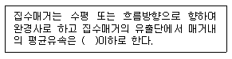
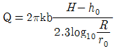
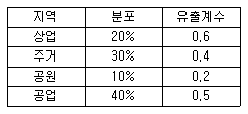
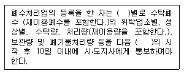

수질환경기사 (2007-05-13 기출문제)
1과목: 수질오염개론
1. 일차 가역반응에서 반응물질 A의 반감기가 5일이라고 한다면 A물질의 95%가 소모되는데 소요되는 시간은?
- 약 12일
- 약 22일
- 약 32일
- 약 42일
(정답률: 62%)

2. 하천의 자정작용에 관한 기술이다. 옳지 않은 것은?
- 하천의 자정작용은 일반적으로 겨울보다 수온이 상승하여 자정계수(f)가 커지는 여름에 활발하다.
- β중부수성 수역(초록색)의 수질은 평지의 일반하천에 상당하며 많은 종류의 조류가 출현한다.
- 하천에서 활발한 분해가 일어나는 지대는 혐기성세균이 호기성세균을 교체하며 fungi는 사라진다. (Whipple의 4지대 기준)
- 하천이 회복되고 있는 지대는 용존산소가 포화될 정도로 증가한다.(Whipple의 4지대 기준)
(정답률: 39%)
3. 어떤A도시에 유량4.2m3/sec,유속 0.4m/sec, BOD7㎎/ℓ인 하천이 흐르고 있다. 이 하천에 유량 25.2m3/min, BOD 500㎎/ℓ 인 공장폐수가 유입되고 있다면 하천수와 공장폐수의 합류지점의 BOD는? (단, 완전 혼합이라 가정함)
- 40.5mg/ℓ
- 51.8mg/ℓ
- 60.3mg/ℓ
- 79.7mg/ℓ
(정답률: 알수없음)
4. Bacteria(C5H7O2N)의 호기성 산화과정에서 박테리아 3g당 소요되는 이론적 산소요구량은? (단, 박테리아는 CO2, H2O, NH3로 전환됨)
- 2.24g
- 3.42g
- 4.25g
- 5.96g
(정답률: 67%)
5. 어느 공장폐수의 COD가 4600mg/ℓ, BOD5가 2100㎎/ℓ이었다면 이 공장의 NBDCOD는? (단, K = BODu/BOD5 = 1.5)
- 1240㎎/ℓ
- 1370㎎/ℓ
- 1450㎎/ℓ
- 1520㎎/ℓ
(정답률: 59%)
6. 분뇨의 특성을 기술한 내용 중 틀린 것은?
- 분뇨는 다량의 유기물을 함유하여 고액분리가 어렵다.
- 분은 VS의 12~20%, 뇨는 80~90%의 질소화합물을 함유한다.
- 분뇨에 포함된 질소화합물은 주로 (NH4)2CO3, (NH4)HCO3형태로 존재한다.
- 분뇨내의 SS농도는 COD농도와 거의 유사하며 BOD농도는 COD농도의 1/5 ~ 1/10정도이다.
(정답률: 25%)
7. 호소수에서 발생하는 부영양화에 대한 내용으로 틀린 것은?
- Carlson은 투명도와 클로로필-a의 농도, 총인의 농도 중 어느 한 항목만을 특정하여도 각각의 부영양화 지수로 표현할 수 있도록 한다.
- 부영양화평가모델은 클로로필 부하모델인 Vollenweider모델과 N모델인 사카모토모델 등이 대표적이다.
- 부영양화 메커니즘은 COD의 내부생산과 영양염의 재순환이라 할 수 있다.
- 부영양화가 급속하게 진행되면 호수는 가속적으로 얕아지게 되고 결국 늪지대로 변한 뒤 소멸하게 된다.
(정답률: 19%)
8. 질소의 순환과정에 대한 설명으로 알맞은 것은?
- 대기 중의 질소 가스는 질소고정 미생물과 식물의 형태로 주로 고정되는데 이 과정을 Nitrigen 이라고 한다.
- 독립영양미생물이 무기질소를 동화하여 유기질소인 암모니아 형태로 변형 방출하며 이 과정을 Ammonification 이라고 한다.
- 호기성조건에서 암모늄이온은 일부 독립영양미생물에 의하여 아질산성 질소와 질산성 질소의 형태로 전환 되는데 이 과정을 Nitrification 이라고 한다.
- 수중의 질소가 혐기성조건하에서 아질산성질소 형태를 거쳐서 대기 중에 질산성질소의 형태로 전환되는 과정을 Denitrification 이라고 한다.
(정답률: 54%)
9. 다음 지하수의 특성에 대한 설명 중 잘못된 것은?
- 지하수는 국지적인 환경조건의 영향을 크게 받는다.
- 지하수의 염분농도는 지표수 평균농도보다 낮다
- 주로 세균에 의한 유기물 분해작용이 일어난다.
- 지하수는 토양수내 유기물질 분해에 따른 탄산가스의 발생과 약산성의 빗물로 인하여 광물질이 용해되어 경도가 높다.
(정답률: 82%)
10. 거주 인구가 5000명인 신시가지의 오수를 단지내에서 처리 후 인접 하천으로 방류하고 있다. 하천 방류구에 배출되는 평균 오수 유량은 60m3/hr , BOD농도는 20mg/ℓ라 할 때, 단지내 오수 처리 시설의 처리효율은? (단, BOD 인구당량은 50g/인×일로 가정)
- 86.5%
- 88.5%
- 90.5%
- 93.5%
(정답률: 60%)
11. 초산 음이온의 염기 해리상수 Kb는 5.6×10-10 이다. 산 해리상수 Ka는?
- 약 1.8 × 10-5
- 약 3.6 × 10-5
- 약 1.8 × 10-4
- 약 3.6 × 10-4
(정답률: 42%)
12. 다음은 진핵세표에 대한 설명이다. 틀린 것은?
- 세포핵에 1개의 염색체를 가지고 있다.
- 호흡을 위한 사립체가 있다.
- 2~9개 정도의 편모가 있다.
- 세포벽은 셀룰로즈, 키탄질로 되어 있다.
(정답률: 60%)
13. 다음 중 탈질화와 가장 관계가 깊은 미생물은?
- Nitrosomonas
- pseudomonas
- Thiobacillus
- vorticella
(정답률: 55%)
14. 카드뮴이 인체에 미치는 영향과 가장 거리가 먼 것은?
- 칼슘 대사기능장애
- Hunter-Russel장애
- 골연화증
- Fanconi씨 증후군
(정답률: 74%)
15. 하천의 길이가 500km이며, 유속은 56m/min 이다. A상류지점의 BODu가 2000ppm이라면, A상류지점에서부터 378km되는 하류지점의 BOD는? (단, 상용대수 기준, 탈산소계수 0.1/day, 수온은 20℃, 기타조건은 고려않음)
- 45 mg/ℓ
- 63 mg/ℓ
- 95 mg/ℓ
- 132 mg/ℓ
(정답률: 10%)
16. Formaldehyde(CH2O) 100mg/ℓ의 이론적 COD값은?
- 238.4mg/ℓ
- 142.2mg/ℓ
- 106.7mg/ℓ
- 74.6mg/ℓ
(정답률: 알수없음)
17. 박테리아를 분류함에 있어 성장을 위한 환경적인 조건에 따라 분류하기도 하는데, 다음 중 바닷물과 비슷한 염조건하에서 가장 잘 자라는 박테리아(호염균)는?
- Hyperthermophiles
- Microaerophiles
- Halophiles
- Chemotrophs
(정답률: 67%)
18. 호수의 수질특성에 관한 설명으로 틀린 것은?
- 호수의 유기물량 측정을 위한 항목은 COD보다 BOD와 클로로필-a를 많이 이용한다.
- 표수층에서 조류의 활발한 광합성 호수의 pH는 8~9 혹은 그 이상을 나타낼 수 있다.
- 수심별 전기전도도의 차이는 수온의 효과와 용존된 오염물질의 농도차로 인한 결과이다.
- 표수층에서 조류의 활발한 광합성 활동시에는 무기탄소원인 HCO3-나 CO32-을 흡수하고OH-를 내보낸다.
(정답률: 28%)
19. 최종 BOD가 500mg/ℓ이고, 탈산소계수 (자연대수를 base)가 0.2/day인 하수의 5일 BOD는?
- 184mg/ℓ
- 225mg/ℓ
- 286mg/ℓ
- 316mg/ℓ
(정답률: 44%)
20. PbSO4의 용해도는 물 1L당 0.038g이 녹는다. PbSO4의 용해도적(Ksp)은? (단, PbSO4분자량303g)
- 1.57 × 10-3
- 1.57 × 10-6
- 1.36 × 10-3
- 1.36 × 10-6
(정답률: 7%)
2과목: 상하수도계획
21. 지하수 취수시설(복류수포함)인 집수매거에 관한 설명이다. ( )안에 알맞은 내용은?

- 0.1m/sec
- 0.3m/sec
- 0.5m/sec
- 1.0m/sec
(정답률: 67%)
22. 정수시설인 침수형 여과상 장치(하니콤방식)에 관한 설명으로 틀린 것은?
- 하니콤 튜브의 충전두께는 2 ~ 6m를 표준으로 한다.
- 하니콤 튜브의 충전율은 접촉지용적의 50% 이상으로 한다.
- 접촉지내 평균유속은 0.1 ~ 0.3 m/sec정도로 한다.
- 원수수질과 발생슬러지의 성상을 고려하여 슬러지배출이 가능한 구조로 한다.
(정답률: 31%)
23. 취수시설인 취수탑에 관한 설명으로 알맞지 않은 것은?
- 취수탑의 횡단면은 정방향 또는 장방형으로 한다.
- 취수탑의 내경은 필요한 수의 취수구를 적절히 배치할 수 있는 크기로 한다.
- 취수탑의 상단 및 관리교의 하단은 하천, 호소 및 댐의 계획최고수위보다 높게 한다.
- 갈수시에도 일정이상의 수심을 확보할 수 있다면, 취수탑은 연간의 수위변화가 크더라도 하천이나, 호소, 댐에서의 취수시설로 알맞다.
(정답률: 39%)
24. 계획오수량에 관한 설명으로 알맞지 않은 것은?
- 계획1일 최대오수량은 1인 1일 최대오수량에 계획인구를 곱한 후 ,여기에 공장 폐수량, 지하수량 및 기타 배수량을 더한 것으로 한다.
- 합류식에서 우천시 계획오수량은 원칙적으로 계획1일 최대오수량의 3배 이상으로 한다.
- 지하수량은 1인 1일 최대오수량의 10 ~ 20%로 한다.
- 계획시간 최대오수량은 계획1일 최대오수량의 1시간당 수량의 1.3 ~ 1.8배를 표준으로 한다.
(정답률: 37%)
25. 회전수 10회/sec, 토출량 23m3/min, 전양정 8m의 터빈펌프의 비속도는?
- 9⑤
- 6⑤
- 5⑤
- 303
(정답률: 48%)
26. 하수처리를 위한 일차침전지에 관한 기준으로 틀린 것은?
- 직사각형인 경우 폭과 길이의 비는 1 : 3이상으로 한다.
- 슬러지수집기를 설치하는 경우의 침전지 바닥기울기는 직사각형에서 1/100 ~ 2/100 으로 한다.
- 표면부하율은 계획 1일 최대오수량에 대하여 합류식의 경우 15 ~ 25m3/m2∙d로 한다.
- 유효수심은 2.5 ~ 4m로 표준으로 한다.
(정답률: 알수없음)
27. 정수시설 중 플록형성지에 관한 설명으로 알맞지 않은 것은?
- 기계식 교반에서 플로큐레이터(flocculator)의 주변속도는 5 ~15cm/sec를 표준으로 한다.
- 플록형성시간은 계획정수량에 대하여 20 ~ 40분간을 표준으로 한다.
- 직사각형이 표준이다.
- 혼화지와 침전지 사이에 위치하고 침전지에 붙어서 설치한다.
(정답률: 알수없음)
28. 직경2m인 하수관을 매설하려 한다. 성토에 의하여 관에 가해지는 하중을 Marston의 방법에 의해 계산하면? (단, 흙의 단위중량 1.9KN/m3, C1 = 1.86, 관의 상부 90˚부분에서의 관매설을 위해 굴토한 도량의 폭 = 3.3m)
- 약 25.7KN/m
- 약 38.5KN/m
- 약 45.7KN/m
- 약 52.9KN/m
(정답률: 34%)
29. 표준활성슬러지법에 관한 내용으로 틀린 것은?
- 수리학적 체류시간은 4 ~ 6시간을 표준으로 한다.
- 반응조내 MLSS 농도는 1500 ~2500mg/L를 표준으로 한다.
- 포기조의 유효수심은 심층식의 경우 10m 표준으로 한다.
- 포기조 여유고는 표준식은 80cm 정도를 표준으로 한다.
(정답률: 알수없음)
30. 피압수 우물에서 영향원 직경1km, 우물직경1m, 피압대수층의 두께 20m , 투수계수 20m/day로 추정되었다면, 양수정에서의 수위 강하를 5m로 유지키 위한 양수량은? (단,

)- 약 26m3/hr
- 약 76m3/hr
- 약 126m3/hr
- 약 186m3/hr
(정답률: 34%)
31. 내경 1.0m인 강관에 내압 10MPa로 물이 흐른다. 내압에 의한 원주방향의 응력도는 1500N/mm2일 때 산정되는 강관두께는?
- 약 3.3mm
- 약 5.2mm
- 약 7.4mm
- 약 9.5mm
(정답률: 20%)
32. 펌프 운전중에 토출량과 토출압이 주기적으로 변동되는 상태를 일으키는 현상으로 펌프 특성 곡선이 산고형에서 발생하며 큰 진동을 발생시킬 수 있는 펌프 운전상 비정상 현상은?
- 캐비테이션
- 서어징
- 수격작용
- 크로스컨넥숀
(정답률: 38%)
33. 용해성성분으로 무기물인 불소(처리대상물질)를 제거하기위해 유효한 정수처리방법과 가장 거리가 먼 것은?
- 응집침전
- 골탄
- 이온교환
- 전기분해
(정답률: 30%)
34. 계획오염부하량 및 계획 유입수질에 관한 설명으로 틀린 것은?
- 계획유입수질 : 하수의 계획유입수질은 계획오염부하량을 계획1일최대오수량으로 나눈값으로 한다.
- 공장폐수에 의한 오염부하량 : 폐수배출부하량이 큰 공장에 대해서는 부하량을 실측하는 것이 바람직하다.
- 생활오수에 의한 오염부하량 : 생활오수에 의한 오염부하량은 1인1일당 오염부하량 원단위를 기초로 하여 정한다
- 관광오수에 의한 오염부하량 : 관광오수에 의한 오염부하량은 당일관광과 숙박으로 나누어 각각의 원단위에서 추정한다.
(정답률: 47%)
35. 다음 표는 우수량을 산출하기 위해 조사한 지역 분포와 유출계수의 결과이다. 이 지역의 전체 평균 유출계수는?

- 0.30
- 0.35
- 0.42
- 0.46
(정답률: 53%)
36. 하수도 관거의 단면형상이 계란형일 때 장ㆍ단점으로 맞는 것은?
- 유량이 큰 경우, 원형기에 비해 수리학적으로 유리하다.
- 원형거에 비하여 관폭이 작아도 되므로 수직방향의 토압에 유리하다.
- 재질에 따른 제조비 변화가 없다.
- 시공의 정확도가 크게 요구되지 않아 비교적 시공이 용이하다.
(정답률: 9%)
37. 폭 4m, 높이 3m 인 개수로의 수심이 2m이고 경사가 4‰일 경우, Manning공식에 의한 물의 유속은? (단, n=0.014)
- 1.13m/sec
- 2.26m/sec
- 4.52m/sec
- 9.04m/sec
(정답률: 40%)
38. 정수시설 중 완속 여과지에 관한 설명으로 틀린 것은?
- 여과지의 깊이는 하부집수장치의 높이에 자갈층 두께, 모래층 두께, 모래면 위의 수심과 여유고를 더하여 2.5~3.5m를 표준으로 한다.
- 완속여과지의 여과속도는 4~5m/day를 표준으로 한다.
- 완속여과지의 모래층 두께는 90~120cm를 표준으로 한다.
- 여과면적은 계획정수량을 여과속도로 나누어 구한다.
(정답률: 40%)
39. 하수도시설의 목적과 가장 거리가 먼 것은?
- 하수의 배제와 이에 따른 생활환경의 개선
- 침수방지
- 공공수역의 수질보전
- 지속발전 가능한 물 순환 구조 구축
(정답률: 20%)
40. 하수도계획의 자료조사를 위하여 계획대상 지역의 자연적조건 중 하천의 흐름상태를 조사하고자 한다. 조사할 사항과 가장 거리가 먼 것은?
- 조사지역내 수역의 유량 및 수위 등의 현황
- 호소, 해역 등 수저의 지형, 이용상황, 유속 및 유량
- 하천 및 기존배수로의 상황
- 강우, 침수의 기록
(정답률: 14%)
3과목: 수질오염방지기술
41. NO3- 20mg/L가 탈질균에 의해 질소가스화 될 때 소요되는 이론적 메탄올의 양(mg/L)은? (단, 메탄올 : CH3OH, 기타 유기 탄소원 고려하지 않음)
- 4.5
- 8.6
- 11.7
- 17.9
(정답률: 36%)
42. 혐기성 처리에 관한 설명으로 틀린 것은?
- 소화는 유기산 생성, 메탄 생성 독립영양미생물 2가지그룹의 미생물에 의해 이루어진다.
- 메탄형성 미생물은 산형성 미생물보다 느리게 성장하고 약 6.7~7.4정도의 좁은 pH법위를 가진다.
- 혐기성 소화 동안의 미생물 작용은 고형물의 액화, 용해성 고형물의 소화, 가스생성의 3가지 단계로 구성된다.
- 적절히 운전되는 소화조에서의 생성가스는 주로 메탄과 이산화탄소는 가스로 구성된다.
(정답률: 15%)
43. 부피가 4000m3인 포기조의 MLSS농도가 2000mg/L이다. 반송슬러지의 SS농도가 8000mg/L, 슬러지 체류시간(SRT)이 8일이면 폐슬러지의 유량은?
- 110m3/day
- 125m3/day
- 145m3/day
- 155m3/day
(정답률: 39%)
44. 응집을 이용하여 하수를 처리할 때 하수온도가 응집반응에 미치는 영향을 설명한 내용으로 틀린 것은?
- 수온이 높으면 반응속도는 증가한다.
- 수온이 높으면 물의점도저하로 응집제의 화학반응이 촉진된다.
- 수온이 낮으면 입지가 커지고 응집제 사용량도 많아진다.
- 수온이 낮으면 플록 형성에 소요되는 시간이 길어진다.
(정답률: 27%)
45. Cd2+가 함유된 폐수의 pH를 높여주면 수산화카드뮴의 침전물이 생성되어 제거 된다. 20℃,pH11에서 폐수내 이론적 카드뮴 이온의 농도는? (단, 20℃, pH11에서 수산화카드뮴의 용해도적은 4.0 × 10-14이며 카드뮴 원자량은 112.4이다)
- 3.5 × 10-5mg/L
- 4.5 × 10-5mg/L
- 3.5 × 10-3mg/L
- 4.5 × 10-3mg/L
(정답률: 10%)
46. 입자상 매체 여과를 이용하는 살수여상 공정으로부터 유출되는 유출수의 부유물질을 제거하고자한다. 유출수의 평균 유량은 50000m3/day, 여과속도는 120ℓ/m2ㆍmin이고 4개의 여과지(병렬기준)를 설계하고자 할 때 여과지 하나의 면적은?
- 약 92m2
- 약 84m2
- 약 73m2
- 약 37m2
(정답률: 알수없음)
47. 혐기성 처리시 메탄의 최대 수율은? (단, 표준상태 기준)
- 제거 kg COD당 0.35m3 CH4
- 제거 kg COD당 0.45m3 CH4
- 제거 kg COD당 0.55m3 CH4
- 제거 kg COD당 0.65m3 CH4
(정답률: 알수없음)
48. 설계부하가 37.61m3/m2ㆍday 이고, 처리할 폐수유량 7570.8m3/day인 경우의 침전조 직경은?
- 10m
- 18m
- 17m
- 16m
(정답률: 60%)
49. 평균입도 3.2mm인 균일한 무연탄층 30cm 에서의 Reynolds수는? (단, 여과속도 = 160L/m2ㆍmin, 동점성계수 = 1.003 × 10-6 m2/sec)
- 1.35
- 4.16
- 5.89
- 8.52
(정답률: 22%)
50. 환원처리공법으로 크롬함유 폐수를 수산화물 침전법으로 처리할 때 침전을 위한 pH범위로 가장 적절한 것은? (단, Cr+3 + 3OH- → Cr(OH)3⇓ )
- pH 4.0 ~ 4.5
- pH 5.5 ~ 6.5
- pH 8.0 ~ 8.5
- pH 11.0 ~ 11.5
(정답률: 34%)
51. 3%(V/V%)고형물 함량이 슬러지 15m3을 30%(V/V%)고형물 함량의 슬러지케이크로 탈수하면 케이크의 용적은? (단, 슬러지 비중은 1.0)
- 1.5m3
- 2.2m3
- 3.5m3
- 4.8m3
(정답률: 34%)
52. 다음의 분리막을 이용한 수처리 방법 중 구동력이 정압차가 아닌 것은?
- 정밀여과
- 역삼투
- 투석
- 한외여과
(정답률: 34%)
53. 도시하수 슬러지의 혐기성 소화에 저해되는 유독 물질의 농도(mg/L)범위로 가장 알맞은 것은?
- Na : 5000 ~ 8000
- K : 2000 ~ 2400
- Mg : 800 ~ 900
- Ca : 1000 ~ 1500
(정답률: 알수없음)
54. 생물막법 처리방식인 접촉산화법의 특징으로 틀린 것은?
- 반송슬러지가 필요하지 않아 운전관리가 용이하다.
- 슬러지 자산화가 기대되어 잉여슬러지량이 감소한다.
- 접촉재가 조 내에 있기 때문에 부착 생물량의 확인이 용이하다.
- 비표면적이 큰 접촉제를 사용하여 부착 생물량을 다량으로 보유 할 수 있기 때문에 유입기질 변동에 유연히 대응 할 수 있다.
(정답률: 17%)
55. 폭기조 혼합액의 SVI가 170에서 130으로 감소하였다. 처리장 운전시 어떻게 대응하여야 하는가?
- 별다른 조치가 필요 없다.
- 반송슬러지 양을 감소시킨다.
- 폭기 시간을 증가시킨다.
- 무기응집제를 첨가한다.
(정답률: 알수없음)
56. 다음 수질성분이 금속도관의 부식에 미치는 영향을 기술한 것으로 틀린 것은?
- 암모니아는 착화물의 형성을 통해 구리, 납 등의 금속 용해도를 증가시킬 수 있다.
- 칼슘은 CaCO3 로 침전하여 부식을 보호하고 부식속도를 감소시킨다.
- 마그네슘은 갈바닉 전지를 이룬 배관상에 구멍을 야기한다.
- pH가 높으면 관을 보호하고 부식속도를 감소시킨다.
(정답률: 20%)
57. 공기공급 오존발생시스템이 공기공급유량 509.7m3/hr에서 운전된다. 오존측정기로 측정한 오존발생 농도는 중량기준으로 1.65%(1.65g오존/100g 공기)이고 20℃,1기압 상태에서 공기의 무게가 12⑤.5g/m3으로 주어질 때 오존생산량(g/day)은?
- 약 143,320 g/day
- 약 243,320 g/day
- 약 343,320 g/day
- 약 443,320 g/day
(정답률: 47%)
58. 회전 생물막 접촉기에 생성되는 생물막의 두께 조절 수단과 가장 거리가 먼 것은?
- 원판의 전단력 증대를 위해 주기적으로 포기함
- 원판 회전속도를 감소시켜 전단력을 증가시킴
- 원판 회전방향을 반전시킴
- 염소같은 화학약품을 가해 탈리유도
(정답률: 25%)
59. 5단계 Bardenpho프로세스에 관한 설명으로 틀린 것은?
- 혐기조 - 1단계 무산소조 - 1단계 호기조 - 2단계 무산소조 - 2단계 호기조로 이루어져 있다.
- 1단계 무산소조에서 혐기조로 유입수의 2배정도의 유량을 내부 반송한다.
- 2단계 무산소조에서는 미처리된 질산성질소를 제거한다.
- 2단계 호기조는 최종침전지에서의 혐기상태를 방지하기 위해 재포기를 실시한다.
(정답률: 19%)
60. G = 200/sec , V = 150m3, 교반기 효율 80%, μ= 1.35 × 10-2 g/cm˙ sec 일 때 소요동력 P(kw)는?
- 3.58kw
- 35.8kw
- 10.13kw
- 101.3kw
(정답률: 10%)
4과목: 수질오염공정시험기준
61. 항량으로 될 때까지 건조한다는 용어의 의미로 가장 알맞은 것은?
- 계속하여 1시간 더 건조하였을 때 전후 무게차가 거의 없을 때
- 계속하여 1시간 더 건조하였을 때 전후 무게차가 g당 0.1mg 이하일 때
- 계속하여 1시간 더 건조하였을 때 전후 무게차가 g당 0.3mg 이하일 때
- 계속하여 1시간 더 건조하였을 때 전후 무게차가 g당 0.5mg 이하일 때
(정답률: 64%)
62. 흡광광도법에 의한 CN량 측정시 시료에 함유된 황화합물을 제거하기 위해 사용하는 시약은?
- 초산아연용액
- L-아스코르빈산
- 아비산나트륨
- 초산 또는 수산화나트륨
(정답률: 10%)
63. 다음은 각종 수질시험에서의 분석물질과 그 분석방법(흡광광도법)을 나타낸 것이다. 옳지 않은 것은?
- 구리 → 디에틸디티오카르바민산법
- 망간 → 디메탈를리옥심법
- 총인 → 아스코르빈산 환원법
- 크롬 → 디페닐카르바지드법
(정답률: 34%)
64. 노말헥산추출물질의 분석을 위해 시료를 pH4이하로 조절하는 방법으로 알맞은 것은?
- 메틸오렌지용액(0.1W/V%) 2,3 방울을 넣고 적색이 황색으로 변할 때까지 염산(1+1)을 넣어 조절한다.
- 메틸오렌지용액(0.1W/V%) 2,3 방울을 넣고 황색이 적색으로 변할 때까지 염산(1+1)을 넣어 조절한다.
- 메틸레드용액(0.1W/V%) 2,3 방울을 넣고 적색이 황색으로 변할 때까지 염산(1+1)을 넣어 조절한다.
- 메틸레드용액(0.1W/V%) 2,3 방울을 넣고 황색이 적색으로 변할 때까지 염산(1+1)을 넣어 조절한다.
(정답률: 46%)
65. 아연 시험방법 중 흡광광도법에서 사용하는 시약인 아스코르빈산 나트륨은 어떤 이온이 공존하는 경우에 검수에 넣어 주는가?
- Cr2+
- Fe2+
- Mn2+
- Cd2+
(정답률: 58%)
66. 흡광광도법의 측광부에 관한 설명으로 틀린 것은?
- 광전관은 주로 자외내지 가시파장 범위에서 광전측광에 사용된다.
- 광전지는 주로 적외파장 범위에서 광전측광에 사용된다.
- 광전자증배관은 주로 자외내지 가시파장 범위에서 광전측과에 사용된다.
- 광전도셀은 주로 근적외파장 범위에서 광전측과에 사용된다.
(정답률: 24%)
67. 다음 중 유기금속 화합물을 선택적으로 검출할 수 있는 가스크로마토그래피법용 검출기는?
- 열전도도 검출기
- 불꽃열이온화 검출기
- 전자포획형 검출기
- 불꽃광도형 검출기
(정답률: 알수없음)
68. 이온크로카토그래피법에 관한 설명으로 옳지 않은 것은?
- 일반적으로 용리액조,시료주입부,액송펌프,분리컬럼 검출기 및 기록계로 구성되어 있다.
- 시료주입량은 보통 50 ~ 100㎕정도이다.
- 분리컬럼은 유리 또는 에폭시수지로 만든 관에 용리액을 충전시킨 것이다.
- 일반적으로 음이온 분석에는 전기전도도 검출기를 사용한다.
(정답률: 0%)
69. 석유계총탄화수소(TPH)를 기체크로마토그래피법으로 측정할 경우, 유효측정농도기준은?
- 석유계총탄화수소로서 0.2mg/L 이상으로 한다.
- 석유계총탄화수소로서 0.5mg/L 이상으로 한다.
- 석유계총탄화수소로서 2.0mg/L 이상으로 한다.
- 석유계총탄화수소로서 5.0mg/L 이상으로 한다.
(정답률: 19%)
70. 이온전극법에서 사용되는 이온전극중 격막형 전극으로 측정할 수 있는 이온과 가장 거리가 먼 것은?
- NH4+
- NO2-
- CN-
- Cl-
(정답률: 19%)
71. 흡광광도법(직접법)으로 폐놀류를 분석할 때 정량범위로 알맞은 것은?
- 0.0025 ~ 0.⑤mg
- 0.⑤ ~ 0.5mg
- 0.5 ~ 1.0mg
- 1.0 ~ 5.0mg
(정답률: 57%)
72. 수질오염공정시험법상 “망간”측정방법이 아닌 것은?
- 원자흡광광도법
- 흡광광도법
- 가스크로마토그래피법
- 유도결함플라스마 발광광도법
(정답률: 43%)
73. [시료 중 용존 질소 화합물을 알칼리성 ( )의 존재하에 120℃에서 유기물과 함께 분해하여 질소이온으로 산화시킨 다음 산성에서 자외부 흡광도를 측정하여 질소를 정량하는 방법이다.] 용존 총질소의 측정원리에 관한 내용이다. ( )안에 알맞은 내용은?
- 과황산칼륨
- 몰리브덴산 암모늄
- 염화제일주석산
- 이스코르빈산
(정답률: 22%)
74. 다음 측정항목중 가스크로마토그래피법으로 측정하지 않는 항목은?
- 유기인
- 음이온계면활성제
- 플리클로리네이티드비페닐
- 알킬수은
(정답률: 알수없음)
75. 흡광광도법(페난트로린법)을 이용한 철분석의 측정원리에 관한 내용으로 틀린 것은?
- 철 이온을 암모니아 알카리성으로 하여 수산화제이철로 침전분리 한다.
- 침전을 염산에 녹여서 염산히드록실아민으로 제일철로 환원한다.
- O - 페난트로린을 넣어 약알카리성에서 나타나는 청색의 철착염의 흡광도를 측정한다.
- 정량범위는 0.02 ~ 0.5mg이고 표준편차율은 10 ~2% 이다.
(정답률: 39%)
76. 총유기탄소(고온연소방법,자외선-과황산 산화방법) 측정시, 유효측정농도 기준은? (단, 공정시험방법 기준)
- 0.2mg/L 이상
- 0.5mg/L 이상
- 1.0mg/L 이상
- 2.0mg/L 이상
(정답률: 17%)
77. 일반적으로 가스크로마토그래피법의 열전도도형 검출기에서 사용하는 운반가스의 종류로 적합한 것은?
- 수소
- 질소
- 산소
- 이산화탄소
(정답률: 16%)
78. 수질오염공정시험방법상 이온크로마토그래피법을 정량분석에 이용할 수 없는 항목은?
- 염소이온
- 아질산성질소
- 질산성질소
- 암모니아성질소
(정답률: 31%)
79. 마이크로파와 마이크로파에 의한 유기물분해에 대한 설명으로 틀린 것은?
- 마이크로파 영역에서 극성분자나 이온이 쌍극자모멘트와 이온전도를 일으켜 온도가 상승하는 원리를 이용한다.
- 마이크로파는 전자파에너지의 일종으로서 빛의 속도로 이동하는 교류와 자기장으로 구성되어 있다.
- 마이크로파 주파수는 300 ~ 300,000MHz 이다.
- 마이크로파의 투과거리는 금속과 같은 반사물질인 경우 그 재질에 따라 상이하게 투과된다.
(정답률: 19%)
80. 다음 중 비소의 정량시험방법에 해당되지 않는 것은?
- 원자흡광광도법
- 과요오드산 칼륨법
- 디에틸디티오카르바민산은법
- 유도결합플라스마 발광광도법
(정답률: 39%)
5과목: 수질환경관계법규
81. 초과부과금의 부과대상이 되는 오염물질이 아닌 것은?
- 총질소
- 유기물질
- 디클로로메탄
- 아연 및 그 화합물
(정답률: 40%)
82. 수질 및 수생태계 환경기준 중 하천의 생활환경 기준으로 틀린 것은? (단, 등급은“ 매우 좋음”기준 )
- 수소이온 농도(pH) : 6.5 ~ 8.5
- 생물화학적산소요구량 BOD(mg/L) : 1 이하
- 부유물질량(mg/L) : 15 이하
- 용존산소량(mg/L) : 7.5 이상
(정답률: 28%)
83. 공동방지시설운영기구의 대표자가 공동방지시설에 관한 변경내용을 시도지사에게 서류로 제출하여 증명하여야 하는 사항과 가장 거리가 먼 것은?
- 공동방지시설의 운영에 관한 규약의 변경
- 공동방지시설의 오염물질처리방법 변경
- 공동방지시설로 유입되는 폐수의 성상 변경
- 공동방지서설로 폐수를 유입하는 사업장 전체의 폐수배출량 또는 그 사업장의 수 변경
(정답률: 43%)
84. 기타 수질오염원에 해당되는 것은?
- 면적 4만 m2의 골프장
- 면적 1000m2인 자동차 폐차장 시설
- 면적 100m2(검사장 면적 포함)인 동력으로 움직이는 모든 기계, 기구, 장비류의 정비를 목적으로 하는 시설
- 용량 5m3인 농산물의 보관, 수송 등을 위하여 소금으로 절임만 하는 시설
(정답률: 10%)
85. 환경기술인을 임명하지 아니하거나 임명(바꾸어 임명한 것을 포함한다)에 대한 신고를 하지 아니한 자에 대한 과태료기준으로 맞는 것은?
- 2백만원 이하의 과태료
- 3백만원 이하의 과태료
- 5백만원 이하의 과태료
- 1천만원 이하의 과태료
(정답률: 40%)
86. 사업자 또는 방지시설을 운영하는 자(공동방지시설의 대표자를 포함한다)는 배출시설 및 방지시설의 가동시간, 폐수배출량, 약품투입량. 시설관리 및 운영자 그 밖에 시설운영에 관한 중요사항을 매일 기록하는 운영일지를 보전하여야 한다. 그 보전기간 기준은? (단, 폐수무방류배출시설의 경우는 제외함)
- 최종기재일 부터 6월간
- 최종기재일 부터 1년간
- 최종기재일 부터 2년간
- 최종기재일 부터 3년간
(정답률: 23%)
87. 수질오염방지시설 중 화학적 처리시설이 아닌 것은?
- 침전물 개량시설
- 흡수시설
- 살균시설
- 화학적 침강시설
(정답률: 알수없음)
88. 수질 및 수생태계 환경기준 중 호소의 생활환경 기준항목인 클로로필-a(Chl-a)의 기준으로 맞는 것은? (단, 등급은 매우 좋음 기준, 단위 : mg/m3 )
- 5이하
- 10이하
- 15이하
- 20이하
(정답률: 40%)
89. 비점오염원 방지시설인 자연형 시설 중 인공습지의 관리, 운영기준으로 틀린 것은?
- 강우가 설계유량 이상으로 유입되는 것을 대비하여 우회시설을 설치한다.
- 인공습지의 유입구에서 유출구까지의 유로는 최대한 길게하고, 길이 대 폭의 비율은 2:1이상으로 한다.
- 유입부에서 유출부까지의 경사는 1.0내지 5.0%를 초과하지 아니하도록 한다.
- 유입수의 적정한 처리를 위하여 식생의 조밀한 성장을 유지하도록 한다.
(정답률: 20%)
90. 다음 중 수질환경보전법에서 규정하고 있는 용어에 대한 정의로 틀린 것은?
- 폐수 라 함은 물에 액체성 또는 고체성의 수질오염물질이 혼입되어 그대로 사용할 수 없는 물을 말한다.
- “불투수층”이라 함은 빗물 또는 눈 녹은 물 등이 지하로 스며들 수 없게 하는 아스팔트, 콘크리트 등으로 포장 된 도로, 주차장, 보도 등을 말한다.
- “강우 유출수”라 함은 점오염원 및 비점오염원의 수질오염물질이 섞여 유출되는 빗물 또는 눈 녹은 물 등을 말한다.
- “기타수질오염원”이라 함은 점오염원 및 비점오염원으로 관리되지 아니하는 수질오염물질을 배출하는 시설 또는 장소로서 환경부령이 정하는 것을 말한다.
(정답률: 57%)
91. 사업장 폐수배출량 규모의 구분을 정하는 기준으로 가장 적절한 것은?
- 측정 전 조업 3월간의 평균 배출량을 기준으로 정한다.
- 측정 전 조업 3월간의 최대 배출량을 기준으로 정한다.
- 연중 배출량의 평균치를 기준으로 정한다.
- 연중 가장 많이 배출한 날을 기준으로 한다.
(정답률: 30%)
92. 기타 수질오염원 중 농ㆍ축수산물 단순가공기설을 설치, 관리하는 자가 하여야 할 조치상항과 가장 거리가 먼 것은?
- 수면 위의 부유물질을 제거하여 방류하여야 한다.
- 침전물을 침전시설을 설치하여 침전처리 하여야 하고 이때 침전물이 재차 부유하지 아니하도록 한다.
- 염분 등으로 타인에 피해가 가지 아니하도록 하여야 한다.
- 가공처리량 및 수탁자에 관한일지를 기록 보관, 관리 하도록 한다.
(정답률: 0%)
93. 조류예보 단계인 조류경보 발령시 조치사항이 아닌 것은?
- 정수의 독소분석 실시
- 황토 등 흡착제 살포 등을 이용한 조류제거 조치
- 주변 오염원에 대한 단속강화
- 어패류 어획. 식용 및 가축방목의 자제 권고
(정답률: 알수없음)
94. 수질환경보전법령에 따라 환경부장관이 수립하는 대권역별 수질보전을 위한 기본계획의 수립주기와 협의주체가 맞는 것은?
- 5년, 관계중앙행정기관장 및 관계수계관리위원회
- 10년, 관계중앙행정기관장 및 관계수계관리위원회
- 5년, 대권역별 환경관리위원회
- 10년, 대권역별 환경관리위원회
(정답률: 42%)
95. 1일 폐수배출량이 2,000m3 미만인 사업장의 처리수가“가”지역으로 배출된다면 BOD와 COD는 얼마 이하로 배출해야 하는가? (단, 배출허용 기준)
- BOD 50mg/ℓ 이하, COD60mg/ℓ 이하
- BOD 60mg/ℓ 이하, COD70mg/ℓ 이하
- BOD 70mg/ℓ 이하, COD80mg/ℓ 이하
- BOD 80mg/ℓ 이하, COD90mg/ℓ 이하
(정답률: 7%)
96. 기본부과금 부과시 청정지역 및 가지역의 지역별 부과계수는?
- 2.0
- 1.5
- 1.0
- 0.5
(정답률: 31%)
97. 환경기술인 등의 교육기관으로 알맞게 짝지은 것은?
- 국립환경과학원 - 환경보전협회
- 환경인력개발원 - 환경관리협회
- 환경관리협회 - 국립환경과학원
- 환경보전협회 - 환경인력개발원
(정답률: 알수없음)
98. 다음은 폐수처리업자의 준수사항에 관한 내용이다. ( )안에 알맞은 것은?

- 월
- 분기
- 반기
- 연도
(정답률: 30%)
99. 배출시설에 대한 일일 기준초과배출량 산정시 적용되는 일일유량 산정식 중 일일조업시간에 대한 내용으로 맞는 것은?
- 일일조업시간은 측정하기 전 최근 조업한 3월간의 배출시설의 조업시간의 평균치로서 분으로 표시한다.
- 일일조업시간은 측정하기 전 최근 조업한 3월간의 배출시설의 조업시간의 평균치로서 시간으로 표시한다.
- 일일조업시간은 측정하기 전 최근 조업한 30일간의 배출시설의 조업시간의 평균치로서 분으로 표시한다.
- 일일조업시간은 측정하기 전 최근 조업한 30일간의 배출시설의 조업시간의 평균치로서 시간으로 표시한다.
(정답률: 54%)
100. 수질오염경보인 조류예보의 조류대발생경보 단계의 발령기준은?
- 2회 연속채취시 클로로필 - a 농도 100mg/m3 이상이고 남조류 세포수 100,000세포/mL 이상인 경우
- 2회 연속채취시 클로로필 - a 농도 100mg/m3 이상이고 남조류 세포수 1,000,000세포/mL 이상인 경우
- 2회 연속채취시 클로로필 - a 농도 1,000mg/m3 이상이고 남조류 세포수 100,000세포/mL 이상인 경우
- 2회 연속채취시 클로로필 - a 농도 1,000mg/m3 이상이고 남조류 세포수 1,000,000세포/mL 이상인 경우
(정답률: 8%)